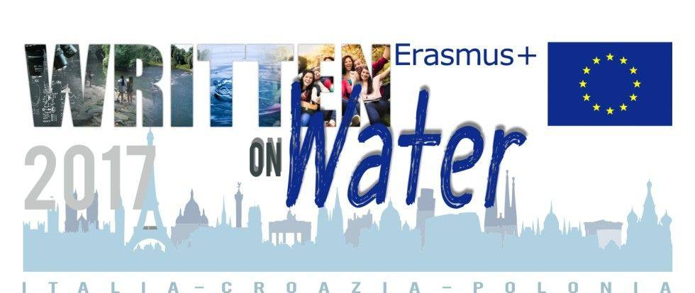
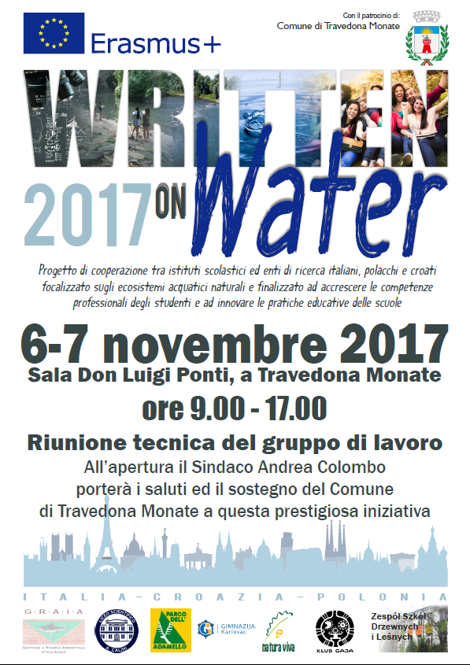

News ·
Avviato il Progetto Erasmus+ “WoW”


Nel triennio 2017 – 2020 Graia sarà partner e capofila di un importante progetto europeo Written on Water 2017 “WoW”.
Il Progetto, partito nel mese di settembre, rientra nell’ambito del programma Erasmus plus e rappresenta un importante strumento e opportunità per ampliare la formazione dei giovani studenti. WoW è un progetto di cooperazione tra istituti scolastici ed enti di ricerca italiani, polacchi e croati focalizzato sugli ecosistemi acquatici naturali e finalizzato ad accrescere le competenze professionali degli studenti e ad innovare le pratiche educative delle scuole.
Erasmus Plus è il programma dell’Unione europea per l’Istruzione, la Formazione, la Gioventù e lo Sport 2014-2020. Il Programma si inserisce in un contesto socio-economico che vede, da una parte, quasi 6 milioni di giovani europei disoccupati, con livelli che in alcuni paesi superano il 50%. Allo stesso tempo si registrano oltre 2 milioni di posti di lavoro vacanti e un terzo dei datori di lavoro segnala difficoltà ad assumere personale con le qualifiche richieste. Ciò dimostra il sussistere di importanti deficit di competenze in Europa.
Erasmus+ è pensato per dare risposte concrete a queste problematiche, attraverso opportunità di studio, formazione, di esperienze lavorative o di volontariato all’estero. La qualità e la pertinenza delle organizzazioni e dei sistemi europei d’istruzione, formazione e assistenza ai giovani saranno incrementate attraverso il sostegno al miglioramento dei metodi di insegnamento e apprendimento, a nuovi programmi e allo sviluppo professionale del personale docente e degli animatori giovanili, e attraverso una maggiore cooperazione tra il mondo dell’istruzione e della formazione e il mondo del lavoro per affrontare le reali necessità in termini di sviluppo del capitale umano e sociale, in Europa e altrove.
Per la prima volta il Programma concede finanziamenti non solo a università e istituti di formazione, ma anche a partenariati innovativi, le cosiddette “alleanze della conoscenza” e “alleanze delle abilità settoriali”, che costituiranno sinergie tra il mondo dell’istruzione e quello del lavoro consentendo agli istituti d’istruzione superiore, ai formatori e alle imprese di incentivare l’innovazione e lo spirito imprenditoriale nonché di elaborare nuovi programmi e qualifiche per colmare le lacune a livello delle abilità. (Fonte:www.erasmusplus.it)
Il 6 e 7 novembre 2017 nel Comune di Travedona Monate (VA) avrà luogo la riunione tecnica del gruppo di lavoro.

